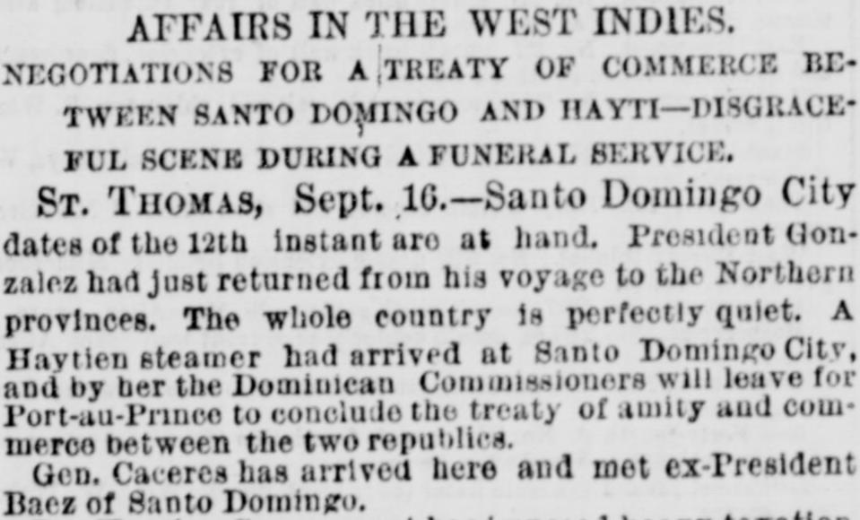
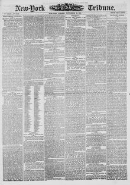

See the full pageVer la página completaA Haytien steamer had arrived at Santo Domingo City, and byUn vapor haitiano había llegado a la ciudad de Santo Domingo, y por
Santo Domingo City advices of the 12th, received at St. Thomas, reported that President Gonzalez had just returned from his voyage to the Northern provinces and that the whole country was perfectly quiet. A Haitian steamer had arrived at Santo Domingo City, and by her the Dominican Commissioners would leave for Port-au-Prince to conclude the treaty of amity and commerce between the two republics. General Caceres had arrived and met ex-President Baez of Santo Domingo.Noticias de la ciudad de Santo Domingo del día 12, recibidas en Saint Thomas, informaban que el presidente González acababa de regresar de su viaje a las provincias del norte y que todo el país estaba en perfecta calma. Un vapor haitiano había llegado a la ciudad de Santo Domingo, y en él partirían los comisionados dominicanos hacia Puerto Príncipe para concluir el tratado de amistad y comercio entre ambas repúblicas. El general Cáceres había llegado y se había reunido con el expresidente Báez, de Santo Domingo.
FULL TEXT:TRADUCCIÓN:
AFFAIRS IN THE WEST INDIES.ASUNTOS EN LAS INDIAS OCCIDENTALES.
NEGOTIATIONS FOR A TREATY OF COMMERCE BETWEEN SANTO DOMINGO AND HAYTI—A SHAMEFUL SCENE DURING A FUNERAL SERVICE.NEGOCIACIONES PARA UN TRATADO DE COMERCIO ENTRE SANTO DOMINGO Y HAITÍ—UNA ESCENA VERGONZOSA DURANTE UN SERVICIO FÚNEBRE.
ST. THOMAS, Sept. 16.—Santo Domingo dates of the 12th instant are at hand. President Gonzalez had just returned from his voyage to the northern provinces. The whole country is perfectly quiet. A Haytien steamer had arrived at Santo Domingo City, and by her the Dominican Commissioners had gone to Port-au-Prince to conclude the treaty of amity and commerce between the two republics.SANTO TOMÁS, 16 de septiembre.—Se tienen a la mano fechas de Santo Domingo del 12 del corriente. El presidente González acababa de regresar de su viaje a las provincias del norte. Todo el país está perfectamente tranquilo. Un vapor haitiano había llegado a la ciudad de Santo Domingo, y en él los Comisionados dominicanos habían ido a Puerto Príncipe para concluir el tratado de amistad y comercio entre las dos repúblicas.
Gen. Caceres has arrived here and met ex-President Baez of Santo Domingo.El general Cáceres ha llegado aquí y se ha reunido con el ex Presidente Báez de Santo Domingo.
The Haytien Government has imposed heavy taxation upon resident foreigners, including foreign clerks in the employment of Haytiens.El Gobierno haitiano ha impuesto una pesada tributación a los extranjeros residentes, incluyendo a los empleados extranjeros al servicio de haitianos.
A disturbance recently occurred in the Catholic Cathedral at Jamaica. A priest tore the Cuban flag from the coffin of a patriot, refusing to permit the introduction of politics into the Catholic service. A riot ensued. The priest was assaulted and knocked off the platform on which the coffin rested.Una perturbación ocurrió recientemente en la Catedral Católica de Jamaica. Un sacerdote arrancó la bandera cubana del féretro de un patriota, negándose a permitir la introducción de la política en el servicio católico. Se suscitó un motín. El sacerdote fue agredido y derribado de la plataforma sobre la cual descansaba el féretro.
EXCITEMENT IN CUBAN CIRCLES.EXCITACIÓN EN LOS CÍRCULOS CUBANOS.
ARRIVAL OF THE DUELIST ROSADO—PROBABLE RETURN OF HIS ANTAGONIST—REPORTED RESIGNATION OF ALDAMA—A VIGOROUS CUBAN CAMPAIGN.LLEGADA DEL DUELISTA ROSADO—PROBABLE REGRESO DE SU ANTAGONISTA—REPORTADA RENUNCIA DE ALDAMA—UNA VIGOROSA CAMPAÑA CUBANA.
Although there appears to be little news of importance from Cuba, yet there are daily events occurring in Cuban and Spanish circles in this city of interest to those who move in them. An incident was of special interest to the Cuban element which occurred on Sunday, of Pio Rosado, one of the principals in the recent duel on the Belgian frontier. Juan Antonio de Conto, editor of the Spanish journal El Cronista, the other principal, who was wounded in the encounter, is expected to arrive in a short time. The friends ofAunque parece haber pocas noticias de importancia desde Cuba, sin embargo hay eventos diarios que ocurren en los círculos cubanos y españoles en esta ciudad de interés para quienes se mueven en ellos. Un incidente fue de especial interés para el elemento cubano que ocurrió el domingo, de Pío Rosado, uno de los principales en el reciente duelo en la frontera belga. Juan Antonio de Conto, editor del periódico español El Cronista, el otro principal, que fue herido en el encuentro, se espera que llegue en poco tiempo. Los amigos de
New-York Tribune. New York, September 29, 1874. Page 1.